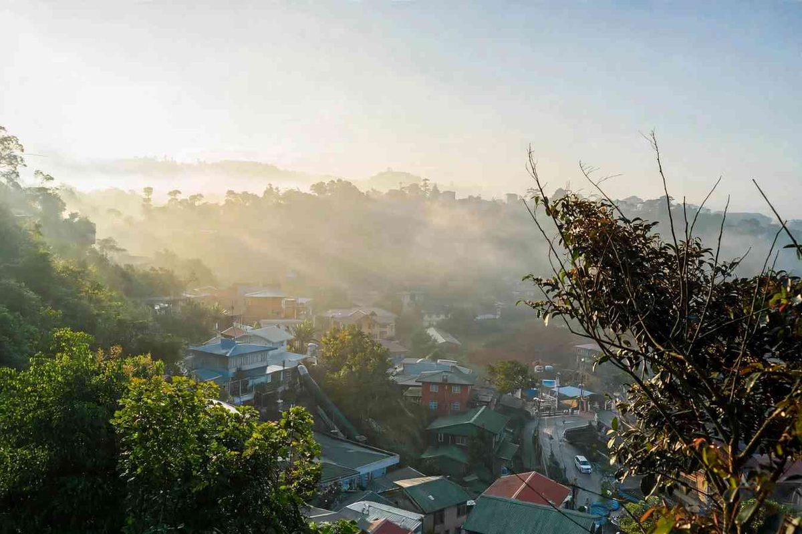

Baguio's coldest stretch runs from December to February, and the chilliest mornings usually come in mid to late January, when the northeast monsoon, the amihan, is at its strongest. On those days, PAGASA's Baguio station often reads somewhere between 9 and 12 degrees Celsius at dawn, and the higher farming towns of Benguet go colder still. The city's lowest reading on record is 6.3°C, taken on 18 January 1961.
That is cold by Philippine standards, not by anyone else's. There is no snow and no ice on the roads. What catches visitors out is how the cold works in a place built for mild weather: rooms without heaters, cold tap water at 5 a.m., and fog that settles over the hills in the morning and again after dark. This guide explains what each of the three cold months is like, what to pack, and how to enjoy the season without spending it shivering under a hotel blanket.
If you came here for the short answer: go in late January if you want the real chill, December if you want the Christmas atmosphere and don't mind crowds, and February if you want cool weather plus the start of the flower festival.

Why Baguio Gets Cold
Two things work together. Baguio sits around 1,500 metres above sea level, and temperatures drop as you climb, so the city is always several degrees cooler than Manila. Then, from about November, the amihan brings cool, dry air down from the northeast. When that air is at its strongest and the sky is clear at night, heat escapes quickly after sunset, and the hours just before sunrise turn properly cold.
That is why the coldest readings tend to come on clear, still mornings rather than rainy ones. A sunny January afternoon can feel pleasant in a long-sleeved shirt, and the same spot can feel wintry at 6 the next morning.
What Each Cold Month Is Like
December: cool, festive and crowded
December mornings are cool, and the real chill is still a few weeks off. The bigger factor is people. The Christmas season is one of Baguio's busiest periods, with the tree lighting on Upper Session Road, the Saint Louis University lantern parade in early December, and a Christmas market at the Rose Garden in Burnham Park. Expect heavy traffic on the roads up and into the city, especially in the days around Christmas and New Year. Book rooms early, and plan to walk in the centre rather than wait in a taxi.
January: the coldest weeks
January is when Baguio earns its winter reputation. Season lows often land in the third or fourth week. In 2024, PAGASA recorded 9.8°C on 27 January, and in 2026 the city reached 10°C on the morning of 23 January. After the New Year rush, the city also gets quieter, so this is the best month for anyone who wants cold air and fewer people.
Higher up, in Atok, Mankayan, Buguias and Kibungan, and on parts of Mount Pulag, temperatures can drop below 10°C and frost forms on the vegetable farms. Locals call it andap. It is bad news for farmers, since it damages crops, but it is also the closest thing to a frozen landscape you will find in the country. If that interests you, our Mount Pulag guide covers permits and trails, and a dawn summit in January is about as cold as the Philippines gets.
February: cool days, flowers and a busier city
Cold mornings can last into February. PAGASA has noted that amihan lows historically occur around the second week of the month, so a chilly spell is still possible. Days get sunnier and the city fills up again as the Panagbenga festival takes over, with the biggest crowds on the parade weekend near the end of the month. Our Panagbenga Festival guide has the dates and planning details.
What to Pack for Baguio in the Cold Months
Layers beat one heavy coat. Days warm up, buildings are not heated, and you will be in and out of cafés and jeepneys all day, so it helps to add and remove pieces easily.
- A fleece or thick hoodie, plus a light windbreaker for fog and drizzle.
- Long trousers and a pair of thick socks for the evening.
- A beanie and light gloves if you plan a sunrise trip, a night walk or a visit to the higher towns.
- Something warm to sleep in. Many budget inns and older guesthouses rely on blankets, not heaters.
- Lip balm and moisturiser. The amihan air is dry, and chapped lips are a common complaint.
- Sunscreen. At this altitude the midday sun is strong, even when the air is cold.
If you forget something, the ukay-ukay stalls around the city sell second-hand jackets and sweaters at low prices, which is a very Baguio way to solve the problem.
Staying Warm Where You Sleep
This is where most cold-season trips go wrong. Before booking, check three things with the property: whether showers have reliable hot water, whether extra blankets are available, and whether the room gets any morning sun. Rooms with large windows that face away from the sun stay cold all day.
Some hotels and serviced apartments offer heaters, and a few have fireplaces in common areas. They cost more, but for families with small children or older relatives, a warm room is worth paying for. Wooden houses and homestays have more character but tend to hold the cold overnight.
Making the Most of Cold Weather
The cold is a big part of the appeal, so plan around it rather than hiding from it.
Get up early once. The fog that sits over the pine slopes at sunrise is the image most people have of Baguio, and the city's view decks and hillside streets are quiet before the day-trippers arrive. Be back indoors for something hot by 8.
Warm food helps. Strawberry taho from street vendors, a bowl of hot noodles or a cup of Benguet coffee all taste better at 12 degrees.
Save outdoor sightseeing for the middle of the day, when the sun is out and the parks are pleasant, and keep evenings for markets, cafés and restaurants.
Is the Cold Season the Best Time to Visit?
For many people, yes. December to February gives Baguio its cool, misty character, the air is drier than in the rainy months from June to October, and January in particular combines cold weather with smaller crowds. The trade-offs are holiday traffic in December, festival crowds in late February, and accommodation that can be uncomfortable if you book without checking for hot water.
For a wider look at when the city is busy or calm, and what that does to prices, read is Baguio quieter and cheaper right now. Then pick your month by what you want from the trip: lights and crowds, cold and quiet, or flowers and parades.

Comments
No comments yet. Been here recently? Share a tip or ask a question.
Leave a Reply